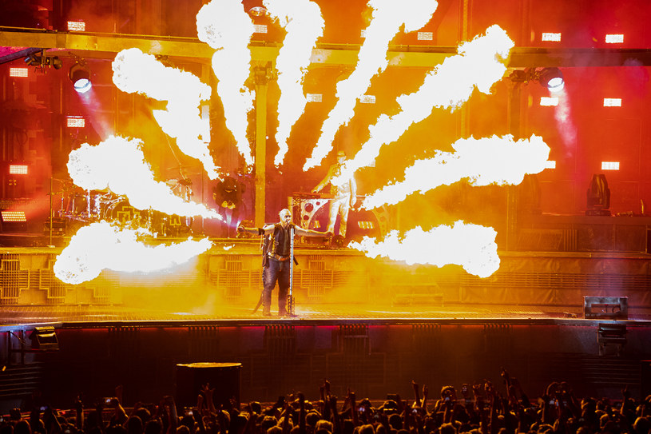
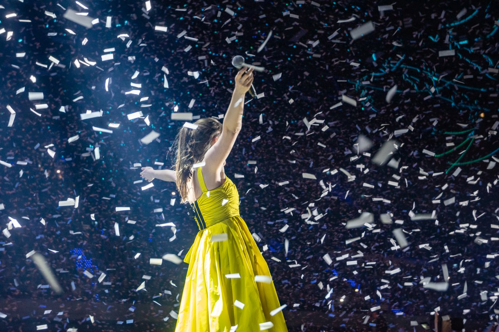
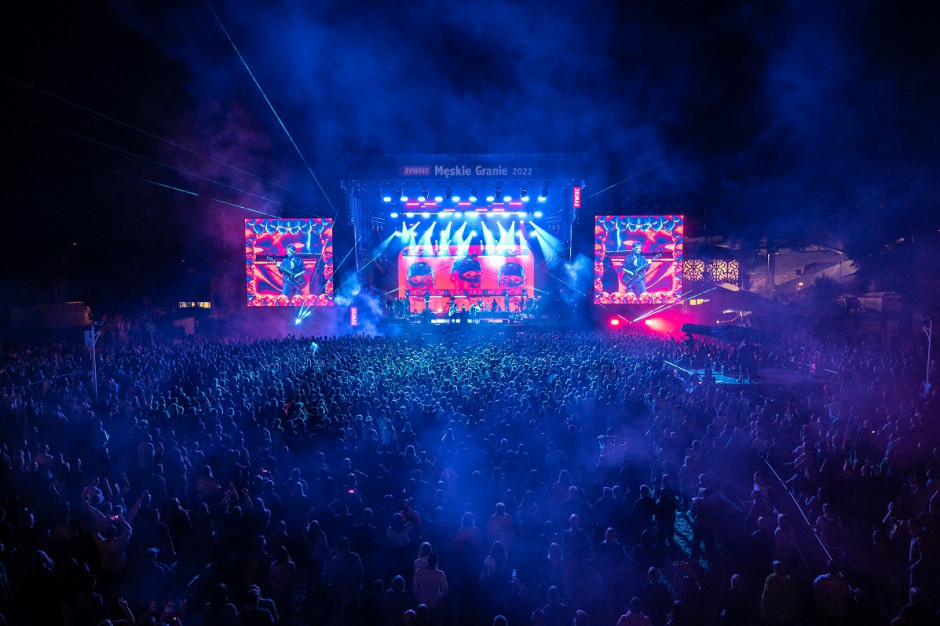

Nasza Historia
W roku 2001 trzy przyjaciółki, Emma, Sophie i Mia, miały wspólną pasję - muzykę na koncertach na żywo. Były ogromnymi fanami różnych gatunków muzycznych i często podróżowały po kraju, aby uczestniczyć w koncertach swoich ulubionych artystów. Z czasem zauważyły, że często koncerty nie były dobrze zorganizowane, a doświadczenie dla fanów mogło być lepsze. Postanowiły więc wziąć sprawy w swoje ręce i założyć własną firmę organizującą koncerty.
W styczniu 2002 roku Emma, Sophie i Mia założyły firmę o nazwie "Harmonia Events". Nazwa była odzwierciedleniem ich głównego celu - tworzenia harmonijnego, niezapomnianego doświadczenia muzycznego dla fanów. Początkowo firma działała w małym biurze, które miały wynajęte na przedmieściach miasta.
Nawigowanie poprzez użycie strzałek
Nasza Historia
Na początku było trudno zdobyć zaufanie artystów i agencji muzycznych, ponieważ Harmonia Events była nową firmą na rynku. Jednak dzięki swojemu entuzjazmowi, determinacji i pozytywnemu podejściu do pracy, udało im się przekonać kilku lokalnych artystów do współpracy. Pierwszym koncertem, który zorganizowały, był występ lokalnego zespołu rockowego w małym klubie muzycznym. Mimo niewielkiego rozmiaru wydarzenia, koncert odniósł sukces, a Harmonia Events zyskała pozytywne opinie.
Sukces pierwszego koncertu umocnił determinację założycielek. Pracowały nad rozwijaniem swojej firmy i zdobywaniem nowych klientów. W kolejnych latach zorganizowały koncerty dla różnych artystów i zespołów o różnych gatunkach muzycznych. Stopniowo zyskiwały na popularności i zdobywały reputację solidnego organizatora koncertów.
W 2006 roku Harmonia Events zatrudniła swojego pierwszego pracownika, Adama, który był pasjonatem muzyki i miał doświadczenie w branży rozrywkowej. Z biegiem czasu firma rosła i zwiększała swoje portfolio klientów. Wprowadziły innowacyjne rozwiązania, takie jak systemy sprzedaży biletów online, aby ułatwić fanom dostęp do wydarzeń.
Nasza Historia
W 2010 roku Harmonia Events zorganizowała swój pierwszy międzynarodowy koncert. Było to ogromne wyzwanie, ale również okazja do rozszerzenia swojej działalności. Koncert odbył się z ogromnym sukcesem i zdobył uznanie zarówno u fanów, jak i wśród artystów. Firma zaczęła współpracować z międzynarodowymi agencjami muzycznymi i organizować koncerty dla znanych artystów z różnych krajów.

Nasza Historia
W kolejnych latach Harmonia Events stała się jednym z wiodących organizatorów koncertów na rynku. Zyskała zaufanie zarówno artystów, jak i fanów, dzięki swojej profesjonalnej obsłudze, doskonałemu planowaniu i kreatywnym podejściu do wydarzeń muzycznych. Ich koncerty przyciągały tłumy, a firma zdobyła reputację nie tylko jako organizator, ale również jako twórca niezapomnianych muzycznych doświadczeń.

Nasza Historia
Dziś, po ponad dwóch dekadach istnienia, Harmonia Events nadal prosperuje. Zatrudniają dziesiątki pracowników i organizują koncerty na całym świecie. Ich portfolio obejmuje zarówno duże stadionowe koncerty, jak i kameralne występy w ekskluzywnych lokalizacjach. Harmonia Events stale dąży do zapewnienia najwyższej jakości doświadczenia muzycznego dla swoich klientów i nadal angażuje się w odkrywanie nowych talentów i promowanie różnorodności muzycznej.
